Cloud governance tools work best when execution and ownership are explicit. This chapter extends a cloud governance framework with practical cloud finops decision loops so cloud governance tools remain measurable and repeatable.
Industry Solutions Whitepaper Series
This track focuses on industry operating models. Each chapter is self-contained and can be used in architecture reviews, security reviews, and procurement discussions.
The first mistake most teams make in cloud governance is assuming dashboards equal control. Dashboards are visibility surfaces. Control is a cross-team operating system: data contract, ownership contract, decision cadence, and closure evidence. A cloud governance framework is useful only when those four contracts stay intact under real workload pressure.
Quick Take for Technical Buyers
- Invisible cloud debt is mostly an execution problem, not a discovery problem.
- Hosted analytics can be strong for attribution, but many teams still need local-first execution for trust-boundary and review-speed reasons.
- A practical cloud governance framework should optimize for closure quality: confirmed owner, validated evidence, and explicit due date.
- The right architecture is rarely winner-takes-all. Mature teams often pair strategic attribution with local forensic execution.
1) The invisible debt model: where spend leaks survive
In field operations, cost drift rarely starts with one dramatic incident. It accumulates through small unresolved artifacts: unattached volumes after migration, idle load balancers after rollback, stale snapshots after failed cleanup windows, and forgotten IP allocations after test cutovers. None of these artifacts is hard to detect in isolation. The challenge is that each one lives in a different operational ownership lane.
That is why monthly finance review and daily engineering review often tell different stories. Finance sees category movement. Engineering sees resource state. Without a shared evidence contract, both sides are correct and still unable to close the loop quickly. Over time, this gap becomes invisible debt: spend that is acknowledged but not operationally resolved.
A resilient cloud governance framework should treat this as a systems problem with three design constraints. First, detection must be reproducible and explainable, not just numerically impressive. Second, ownership routing must be explicit, because unresolved ownership is the fastest route to recurring waste. Third, evidence must be audience-adapted: engineers need resource lineage, finance needs verified impact, management needs closure status with timeline confidence.

To validate this model, we reviewed 14 anonymized rollout windows across mixed AWS and Azure environments used by CWS design-partner teams between December 2025 and March 2026. The pattern was consistent: teams detected most low-hanging idle resources quickly, but the median closure cycle still exceeded one week when findings lacked a named owner and source evidence. In the subset where ownership and evidence were attached at creation time, median closure dropped to under three days. The absolute dollar impact varied by account size, but the process signal did not.
These observations align with established external guidance. FinOps Foundation materials emphasize that visibility without accountability creates recurring optimization debt, while cloud-provider cost-optimization guidance repeatedly stresses ownership and lifecycle controls over one-off cleanup campaigns. In short: dashboards reveal the smoke, but ownership and evidence put out the fire.
2) Sovereignty by design: why boundary choice changes rollout speed
Many teams evaluate cloud tooling only on feature breadth. In practice, boundary choice is often a stronger predictor of deployment speed. If security review must evaluate broad third-party data custody before pilot start, rollout can stall long before technical merit is discussed. This is not a criticism of hosted platforms; it is an organizational reality in regulated and privacy-sensitive environments.
Local-first execution changes this sequence. Credentials remain in operator custody, API calls run from the customer boundary, and evidence is produced locally for review handoff. The result is a different risk profile: less external custody complexity, more internal runtime responsibility. Whether that tradeoff is acceptable depends on team maturity, but it is explicit and reviewable.
For teams asking whether this is a strategy argument or a technical argument, it is both. Boundary decisions affect procurement lead time, legal review volume, and incident blast-radius assumptions. They also affect day-two operations: where logs live, who can reproduce findings, and how quickly a disputed recommendation can be verified.
In this model, a cloud cost management platform is not defined by chart aesthetics. It is defined by whether teams can move from finding to accountable action without creating new trust debt in the process.
3) Technical deep dive: non-intrusive execution with evidence discipline
The execution model used here can be described as non-intrusive audit flow, not because it is passive, but because it avoids agent sprawl and unnecessary control-plane coupling. Provider metadata is collected through scoped API calls, normalized into a shared finding model, evaluated through deterministic policy rules, and exported as audience-specific evidence packs.
Three implementation details matter for practical reliability:
- Concurrency with provider-safe controls: scan concurrency is bounded so API throughput improves without triggering avoidable throttling cascades.
- Explicit retry semantics: transient network/provider errors use staged retry and backoff paths, and unrecoverable states are surfaced as explicit failure classes.
- Evidence lineage: each recommendation keeps source references so reviewers can validate context without reverse engineering the entire scan path.
These controls are not optional polish. They are what separate periodic discovery scripts from operational governance workflows. Scripts can find waste. Governance systems must prove why a finding is trustworthy and who should act next.
A practical warning from implementation history: adding provider-specific logic in presentation layers creates fast short-term progress and expensive long-term inconsistency. Policy semantics should live in normalized evaluation paths. UI should render decisions, not invent them.
4) Industry playbooks: finance and engineering paths
Financial and regulated environments. The primary risk is not only overspend; it is unverifiable action. A recommendation that cannot be traced to source context is often rejected, regardless of potential savings. In this environment, useful governance output includes actor ownership, evidence references, and a reversible action path. The fastest teams define a weekly decision window with explicit approver roles, instead of ad-hoc asynchronous approvals that silently decay.
Engineering-heavy product teams. The common failure mode is test-environment residue after release or rollback cycles. Here the right integration point is workflow-level, not just dashboard-level. Teams can schedule scoped scans around release windows, route findings to service owners, and require closure notes before sprint close. The goal is not to chase every low-cost artifact immediately; the goal is to prevent repeatable residue classes from surviving multiple release cycles.
Across both paths, the shared lesson is cadence discipline. Teams that improve quickly run a fixed loop: detect, triage, assign, verify, close, and report. Teams that struggle usually skip one of the middle steps, most often assignment clarity or verification evidence.
5) FinOps maturity roadmap: discover, optimize, prevent
A durable cloud governance framework needs a maturity model that executives and operators can both use. The model below is intentionally simple:
- Discover: make hidden artifacts visible with reliable classifications.
- Optimize: close recurring waste classes with owner-based execution.
- Prevent: embed checks into delivery workflows so the same debt class does not regenerate at the same rate.
The anti-pattern is trying to jump directly to prevention without stable discovery and closure discipline. Preventive controls built on weak evidence usually become noisy, then ignored. In mature teams, prevention is earned by proving that discovery and optimization outputs are already trusted and actionable.

6) Limits, tradeoffs, and decision guidance
This chapter is not arguing that one model should replace every other model. Hosted SaaS platforms can be stronger for broad business attribution narratives. Local-first models can be stronger for boundary-sensitive execution and rapid evidence validation. Many organizations will benefit from combining both.
For teams evaluating tool fit under strict review constraints, a privacy first cloud cost tool can be the fastest path to pilot because it reduces third-party custody scope while preserving auditability.
Also note explicit limits. Local-first execution does not remove the need for disciplined local operations. If endpoint controls are weak or ownership is undefined, findings may still stall. Likewise, evidence quality does not guarantee organizational action; leadership cadence and accountability design remain essential.
For technical buyers, the decision question is practical: which model reduces your current bottleneck faster? If your bottleneck is executive attribution, start with that layer. If your bottleneck is operator closure and trust-boundary friction, start with execution-first local governance.
Implementation checklist
- Define one evidence contract shared by finance and engineering.
- Run one fixed weekly cadence before scaling scope.
- Require owner assignment and due date for each actionable finding class.
- Track closure rate by class, not only total savings discovered.
- Document two explicit non-goals for quarter one to avoid governance sprawl.
Data and evidence sources
- Documentation Center and Security page: trust-boundary and execution model baseline.
- Metrics Definition: analytics and funnel metric semantics used for governance reporting alignment.
- Release Ledger and Roadmap: delivery discipline and operating control evolution.
- Industry comparison article: architecture-level decision framing for technical buyers.
- FinOps Framework: accountability and operating-rhythm principles for cloud cost governance.
- AWS Well-Architected Cost Optimization Pillar: lifecycle control guidance for persistent cloud cost hygiene.
Claims in this chapter are constrained to public documentation and shipped product behavior. Where tradeoffs are discussed, they are presented as operating-model differences, not vendor motive assumptions.
Next chapter
Continue to Part 2: Regulated Environments, Control Evidence, and Change Review for the control mapping model, evidence packet structure, and approval-lane design used in restricted-network operations.